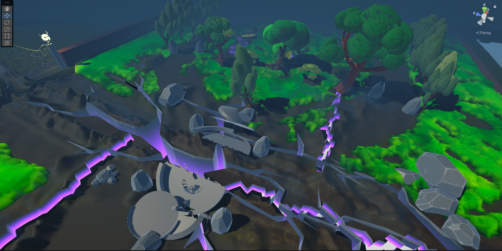
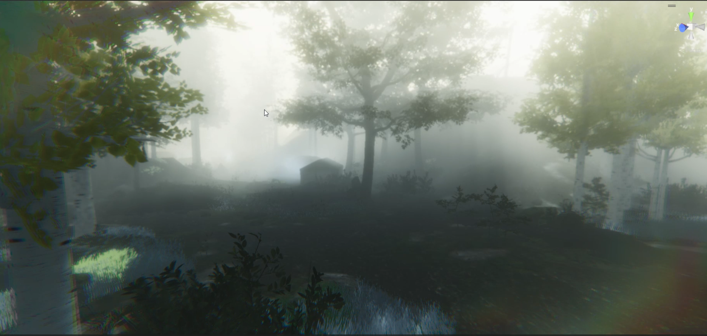
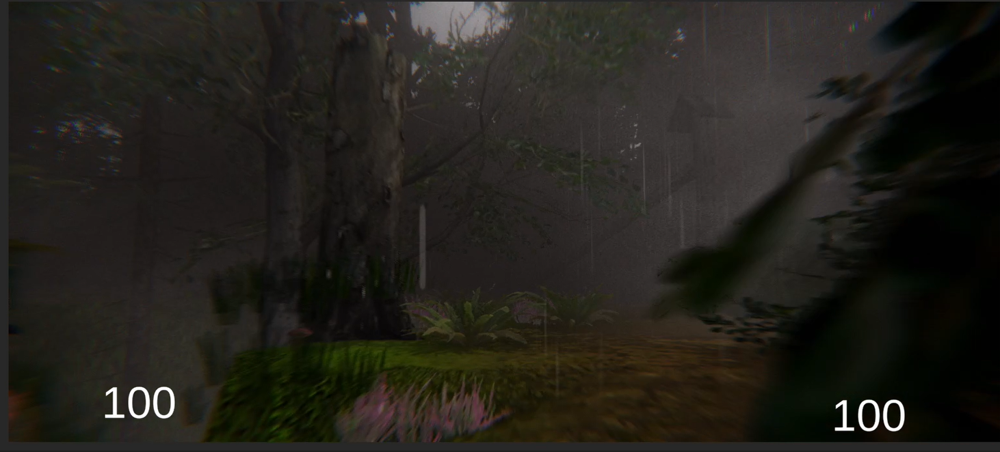

Skills

Experience
Projects
Planet of Twins

Planet of Twins
My flagship project, an original PC action-adventure game in active development. You control two twins at once who must stay close to survive, since the distance between them drains their shared health. I produce it and build it: dual-character control, proximity health, a Weaver's Gate rescue ability, and a hybrid GOAP and behaviour-tree enemy AI are all systems I designed and wrote myself. Team of two, inspired by Binary Land on the NES.
Action RPG

Action RPG
An Action RPG for PC where the player is the last survivor of a village corrupted by an evil king and must recover the four fragments of an ancient sword. I worked as producer, project manager, level designer, and shader artist, and built it alongside two collaborators (a sound designer and a C# programmer). It is where I practised running the full end-to-end production lifecycle with a small team.
FPP Horror

FPP Horror
A short first-person survival horror game built solo, end to end, inspired by titles like Outlast. I wanted to create genuine suspense from minimal systems, with an environment that reacts to the player and a narrative that pulls them naturally toward the next beat. I handled the AI, level design, optimization, audio, and the lighting-driven pacing myself.